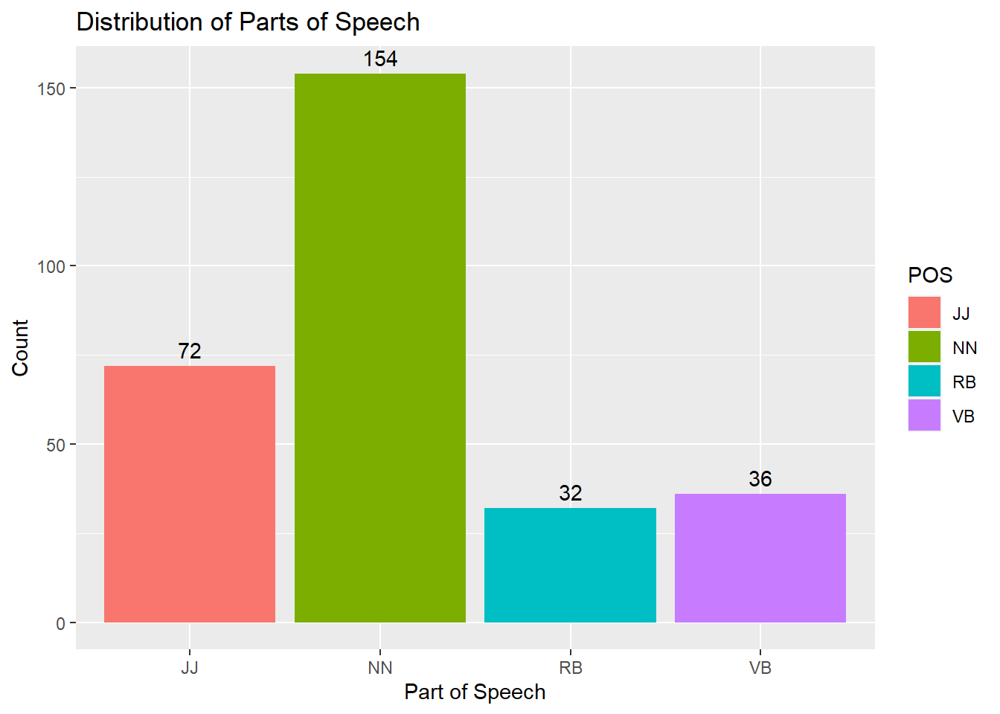
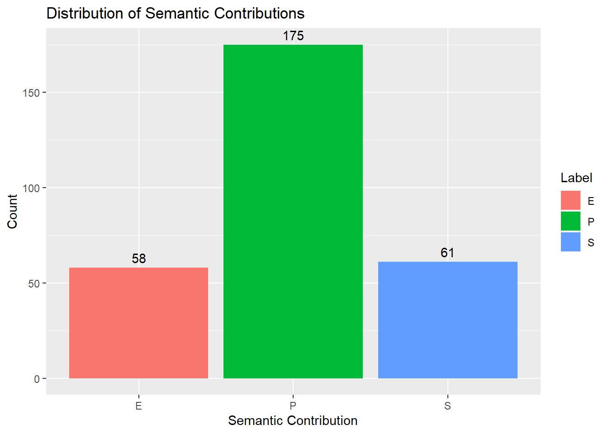
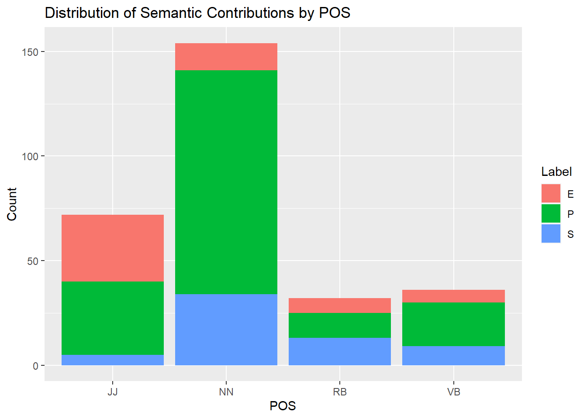
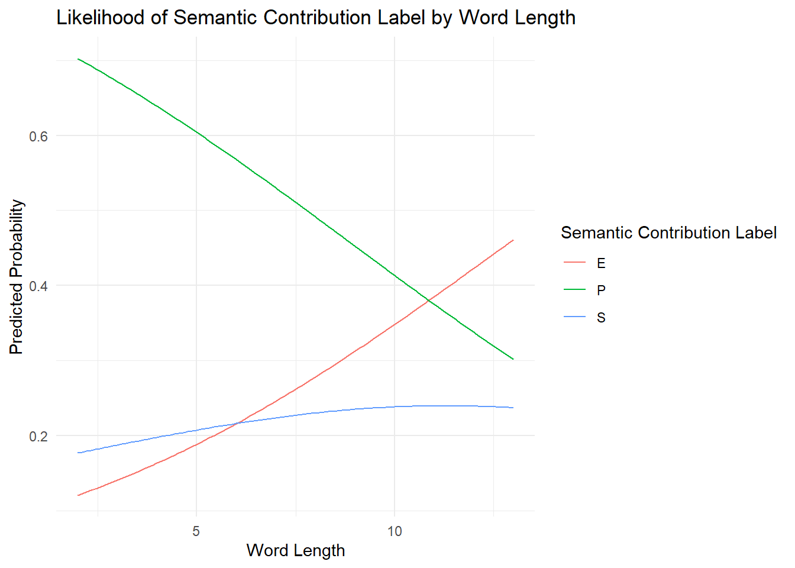
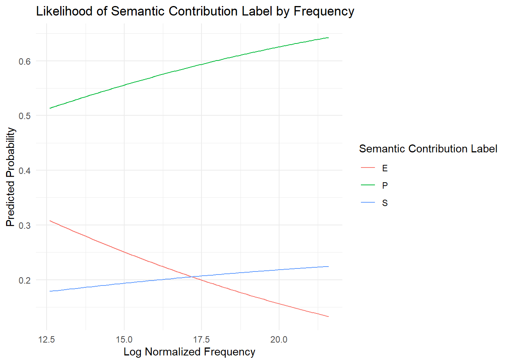

salad.data <- read.csv("../data/salad_consolidated_refined_counted.csv")ReduplicationFinal
Data
opensubs.data <- read.csv("../data/en_v1_222k/full_222k_counted.csv")opensubs.filtered <- subset(opensubs.data, Label %in% c("P", "E", "S"))
opensubs.selected <- opensubs.filtered[, names(opensubs.filtered) %in% names(salad.data)]
combined.data <- rbind(salad.data, opensubs.selected)
write.csv(combined.data, "../data/combined_opensubs_salad_data.csv", row.names = FALSE)combined.data$Log_Freq_Count <- log(combined.data$Freq_Count)
head(combined.data) Word Label POS Word_Length Freq_Count Log_Freq_Count
1 adam S NN 4 21694386 16.89256
2 aggressive P JJ 10 7345918 15.80966
3 aggressive P JJ 10 7345918 15.80966
4 alone E JJ 5 39326417 17.48741
5 amherst P NN 7 2846723 14.86168
6 anywhere E RB 8 23947583 16.99138library(dplyr)
Attaching package: 'dplyr'The following objects are masked from 'package:stats':
filter, lagThe following objects are masked from 'package:base':
intersect, setdiff, setequal, unionlibrary(ggplot2)
labels.1 <- readLines("../data/annotations/opensubs_agreed_1.txt")Warning in readLines("../data/annotations/opensubs_agreed_1.txt"): incomplete
final line found on '../data/annotations/opensubs_agreed_1.txt'labels.2 <- readLines("../data/annotations/opensubs_agreed_2.txt")Warning in readLines("../data/annotations/opensubs_agreed_2.txt"): incomplete
final line found on '../data/annotations/opensubs_agreed_2.txt'all.labels <- c(labels.1, labels.2)
label.freq <- table(all.labels)
label.df <- data.frame(Label = names(label.freq), Frequency = as.numeric(label.freq))
label.df$Percentage <- label.df$Frequency / sum(label.df$Frequency) * 100
ggplot(label.df, aes(x = "", y = Frequency, fill = Label)) +
geom_bar(stat = "identity", width = 1) +
coord_polar("y", start = 0) +
labs(title = "Distribution of Semantic Contribution Labels in OpenSubs Dataset",
fill = "Label") +
theme_void() +
scale_fill_discrete(labels = paste(label.df$Label, sprintf("(%0.1f%%)", label.df$Percentage))) +
theme(legend.position = "bottom")
library(ggplot2)
ggplot(combined.data, aes(x = POS, fill = POS)) +
geom_bar() +
geom_text(stat='count', aes(label= after_stat(count)), vjust=-0.5) +
labs(title = "Distribution of Parts of Speech",
x = "Part of Speech",
y = "Count")
library(ggplot2)
ggplot(combined.data, aes(x = Label, fill = Label)) +
geom_bar() +
geom_text(stat='count', aes(label= after_stat(count)), vjust=-0.5) +
labs(title = "Distribution of Semantic Contributions",
x = "Semantic Contribution",
y = "Count")
library(ggplot2)
library(nnet)
summary(combined.data) Word Label POS Word_Length
Length:294 Length:294 Length:294 Min. : 2.000
Class :character Class :character Class :character 1st Qu.: 4.000
Mode :character Mode :character Mode :character Median : 5.000
Mean : 5.194
3rd Qu.: 6.000
Max. :13.000
Freq_Count Log_Freq_Count
Min. :2.957e+05 Min. :12.60
1st Qu.:2.173e+07 1st Qu.:16.89
Median :4.965e+07 Median :17.72
Mean :1.430e+08 Mean :17.70
3rd Qu.:1.447e+08 3rd Qu.:18.79
Max. :2.399e+09 Max. :21.60 ggplot(combined.data, aes(x = POS, fill = Label)) +
geom_bar() +
labs(title = "Distribution of Semantic Contributions by POS",
x = "POS",
y = "Count")
Raw probabilities of P/S/E given POS
library(dplyr)
library(ggplot2)
library(knitr)
label.counts <- combined.data %>%
group_by(POS, Label) %>%
summarize(count = n())`summarise()` has grouped output by 'POS'. You can override using the `.groups`
argument.pos.totals <- combined.data %>%
group_by(POS) %>%
summarize(total.count = n())
label.percentages <- label.counts %>%
left_join(pos.totals, by = "POS") %>%
mutate(percentage = (count / total.count) *100)
label.percentages.df <- as.data.frame(label.percentages)
kable(label.percentages.df, caption = "Percentage of Semantic Contributions by POS")| POS | Label | count | total.count | percentage |
|---|---|---|---|---|
| JJ | E | 32 | 72 | 44.444444 |
| JJ | P | 35 | 72 | 48.611111 |
| JJ | S | 5 | 72 | 6.944444 |
| NN | E | 13 | 154 | 8.441558 |
| NN | P | 107 | 154 | 69.480519 |
| NN | S | 34 | 154 | 22.077922 |
| RB | E | 7 | 32 | 21.875000 |
| RB | P | 12 | 32 | 37.500000 |
| RB | S | 13 | 32 | 40.625000 |
| VB | E | 6 | 36 | 16.666667 |
| VB | P | 21 | 36 | 58.333333 |
| VB | S | 9 | 36 | 25.000000 |
Model (with POS, word length, and frequency as predictors)
combined.data$POS <- factor(combined.data$POS, levels = c("NN", "JJ", "RB", "VB"))
combined.data$Label <- factor(combined.data$Label, levels = c("P", "S", "E"))
combined.data$POS <- relevel(combined.data$POS, ref = "NN")
combined.data$Label <- relevel(combined.data$Label, ref = "P")
model <- multinom(Label ~ POS + Word_Length + Log_Freq_Count, data = combined.data)# weights: 21 (12 variable)
initial value 322.992013
iter 10 value 253.237645
iter 20 value 252.191106
iter 20 value 252.191105
iter 20 value 252.191105
final value 252.191105
convergedsummary(model)Call:
multinom(formula = Label ~ POS + Word_Length + Log_Freq_Count,
data = combined.data)
Coefficients:
(Intercept) POSJJ POSRB POSVB Word_Length Log_Freq_Count
S 0.1250445 -0.8024024 1.419712 0.2926930 0.08383826 -0.09731712
E -0.2866130 2.0088020 1.857399 0.8456115 0.14719448 -0.14900778
Std. Errors:
(Intercept) POSJJ POSRB POSVB Word_Length Log_Freq_Count
S 2.028345 0.5185374 0.4982946 0.4471255 0.08877777 0.1058542
E 2.321282 0.3873713 0.6164822 0.5536555 0.09413582 0.1206399
Residual Deviance: 504.3822
AIC: 528.3822 z <- summary(model)$coefficients/summary(model)$standard.errors
z (Intercept) POSJJ POSRB POSVB Word_Length Log_Freq_Count
S 0.06164851 -1.547434 2.849142 0.6546104 0.944361 -0.9193509
E -0.12347188 5.185728 3.012900 1.5273242 1.563639 -1.2351447p <- (1 - pnorm(abs(z), 0, 1)) * 2
p (Intercept) POSJJ POSRB POSVB Word_Length Log_Freq_Count
S 0.9508427 1.217586e-01 0.004383735 0.5127186 0.3449852 0.3579121
E 0.9017334 2.151730e-07 0.002587638 0.1266804 0.1179023 0.2167767Word Length only Model
length.model <- multinom(Label ~ Word_Length, data = combined.data)# weights: 9 (4 variable)
initial value 322.992013
iter 10 value 277.820475
final value 277.820469
convergedsummary(length.model)Call:
multinom(formula = Label ~ Word_Length, data = combined.data)
Coefficients:
(Intercept) Word_Length
S -1.587050 0.1035639
E -2.158591 0.1986573
Std. Errors:
(Intercept) Word_Length
S 0.4656235 0.08452959
E 0.4734252 0.08237858
Residual Deviance: 555.6409
AIC: 563.6409 library(ggplot2)
library(tidyr)
new.data <- data.frame(Word_Length = seq(min(combined.data$Word_Length), max(combined.data$Word_Length), length.out = 100))
length.predictions <- predict(length.model, newdata = new.data, type = "probs")
length.predictions.df <- data.frame(new.data, length.predictions)
length.predictions.df <- gather(length.predictions.df, Label, Probability, -Word_Length)
ggplot(length.predictions.df, aes(x = Word_Length, y = Probability, color = Label)) +
geom_line() +
labs(title = "Likelihood of Semantic Contribution Label by Word Length",
x = "Word Length",
y = "Predicted Probability",
color = "Semantic Contribution Label") +
theme_minimal()
Frequency only Model
freq.model <- multinom(Label ~ Log_Freq_Count, data = combined.data)# weights: 9 (4 variable)
initial value 322.992013
final value 280.015169
convergedsummary(freq.model)Call:
multinom(formula = Label ~ Log_Freq_Count, data = combined.data)
Coefficients:
(Intercept) Log_Freq_Count
S -1.0582332 0.0002438423
E 0.9773974 -0.1182008828
Std. Errors:
(Intercept) Log_Freq_Count
S 1.670483 0.09366132
E 1.649430 0.09365141
Residual Deviance: 560.0303
AIC: 568.0303 library(ggplot2)
library(tidyr)
new_data <- data.frame(Log_Freq_Count = seq(min(combined.data$Log_Freq_Count), max(combined.data$Log_Freq_Count), length.out = 100))
freq.predictions <- predict(freq.model, newdata = new_data, type = "probs")
freq.predictions.df <- data.frame(new_data, freq.predictions)
freq.predictions.df <- gather(freq.predictions.df, Label, Probability, -Log_Freq_Count)
ggplot(freq.predictions.df, aes(x = Log_Freq_Count, y = Probability, color = Label)) +
geom_line() +
labs(title = "Likelihood of Semantic Contribution Label by Frequency",
x = "Log Normalized Frequency",
y = "Predicted Probability",
color = "Semantic Contribution Label") +
theme_minimal()
library(dplyr)
library(knitr)
avg.stats <- combined.data %>%
group_by(POS) %>%
summarize(avg.word.length = mean(Word_Length),
median.word.length = median(Word_Length),
avg.log.frequency = mean(Log_Freq_Count),
median.log.frequency = median(Log_Freq_Count))
kable(avg.stats, format = "markdown")| POS | avg.word.length | median.word.length | avg.log.frequency | median.log.frequency |
|---|---|---|---|---|
| NN | 5.110390 | 5 | 17.52901 | 17.62851 |
| JJ | 5.402778 | 5 | 17.48912 | 17.69468 |
| RB | 5.281250 | 4 | 19.41297 | 19.94505 |
| VB | 5.055556 | 5 | 17.35916 | 17.05917 |